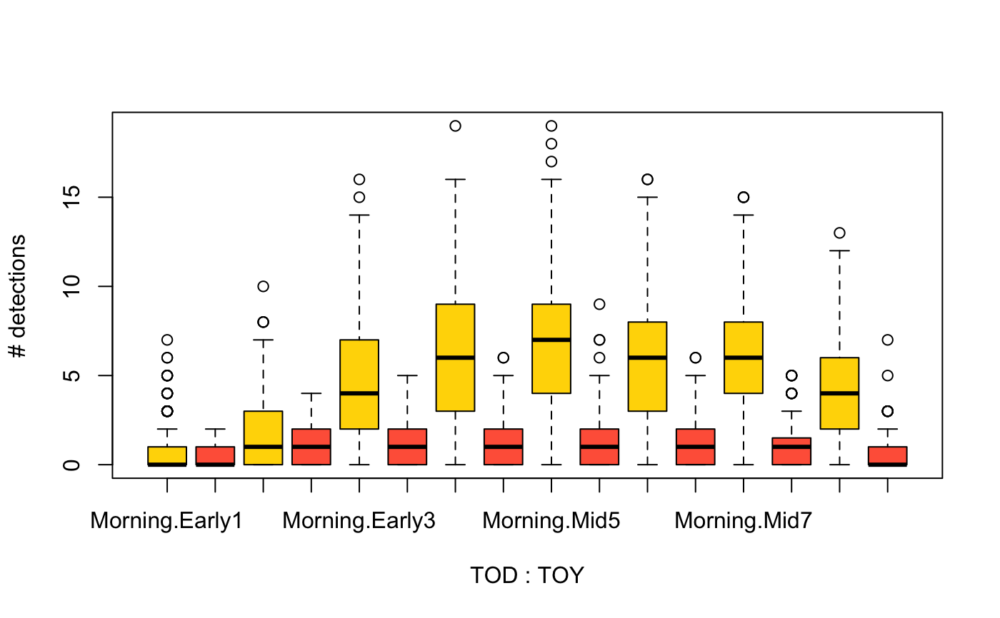

birdrec.RdData set listing 156 species (mostly birds, few amphibians and mammals) detected at 127 sites (367 point locations) in Alberta, Canada in 2015, using autonomous recording technology (ARU; Wildlife Acoustic Song Meter) for sound recordings.
data("birdrec")
A list with 3 elements with matching ordering:
xtab is a sample x species matrix with number of detections,
samp is a data frame with sample level attributes.
taxa is a data frame with species level attributes.
Multiple random recordings at each location were selected
according to a stratified random design
(based on combination of TOY and TOD).
These recordings were listened to by trained analysts
and species were identified based on auditory cues.
This data set lists detections from the first 1-minute segment of each
recording. Dates for the 3967 1-minute segments
range between 2015-03-31 and 2015-07-29.
Variables in birdrec$samp are the following:
PKEY: primary key for location/time combinations.
POINT: unique spatial location IDs, each point had
its own ARU unit.
SITE: site ID (1-4 ARU units deployed per site).
YEAR: year, 2015.
MONTH: month from 3 (March) to 7 (July).
MDAY: day of month, 1-31.
HOUR: 24-hour of day, values between 0-12.
MINUTE: minute, 0-59.
YDAY: ordinal day of the year, 89-209.
RAIN, WIND, INDUSTRY, NOISE:
level of rain, wind, industrial noise, and background noise.
0 = no; 1 = light; 2 = moderate; 3 = heavy.
MICROPHONE:
Every recording contains a certain level of background static due to the
pre-amplifiers; however, problems, such as, electrostatic discharge on the
microphones, faulty wiring, poorly installed microphones and/or
missing microphones can occur causing excess static or dead channels.
0 = no microphone related issues;
1 = left microphone cuts out intermittently;
2 = right microphone cuts out intermittently;
3 = both microphones cut out intermittently;
4 = left channel failed;
5 = right channel failed;
6 = both channels failed (no cases in the data set);
7 = left side extra static;
8 = right side extra static;
9 = both sides extra static;
10 = other issues;
11 = unbalanced channels.
TOY: time of year intervals used for stratified random
selection of dates. 8 intervals divided into 3 major units
(early, mid, and late breeding season; YDAY 140 and 180 were used
as threshold between the major units).
TOD: time of day, midnight (HOUR = 0) or
morning (HOUR > 0).
Variables in birdrec$taxa are the following:
Species, CommonName, ScientificName,
Family, Order, Class,
and MigratoryBehaviour.
Methodology and metadata is described in ABMI (2016), and Lankau et al. (2015).
Alberta Biodiversity Monitoring Institute (ABMI, www.abmi.ca)
Alberta Biodiversity Monitoring Institute (ABMI), 2016. Terrestrial field data collection protocols (abridged version) 2016-05-18. Alberta Biodiversity Monitoring Institute; Edmonton, Alberta, Canada.
Lankau, H.E., MacPhail, A., Knaggs, M. & Bayne, E., 2015. Acoustic recording analysis protocol. Bioacoustic Unit, University of Alberta, and Alberta Biodiversity Monitoring Institute; Edmonton, Alberta, Canada.
#> List of 3 #> $ xtab: int [1:3967, 1:156] 0 0 0 0 0 0 0 0 0 0 ... #> ..- attr(*, "dimnames")=List of 2 #> .. ..$ : chr [1:3967] "T_IG_ABMI_388_2015_1_STATION_NW_89:0:0" "T_IG_ABMI_599_2015_1_STATION_NE_89:0:0" "T_IG_ABMI_855_2015_1_STATION_NW_89:0:0" "T_IG_ABMI_855_2015_1_STATION_SE_89:0:0" ... #> .. ..$ : chr [1:156] "AlderFlycatcher" "AmericanBittern" "AmericanCoot" "AmericanCrow" ... #> $ samp:'data.frame': 3967 obs. of 16 variables: #> ..$ PKEY : Factor w/ 3967 levels "T_IG_ABMI_388_2015_1_STATION_NW_89:0:0",..: 1 2 3 4 5 6 7 8 9 10 ... #> ..$ POINT : Factor w/ 367 levels "T_IG_ABMI_1_2015_1_STATION_NE",..: 120 197 258 259 81 142 200 230 30 57 ... #> ..$ SITE : Factor w/ 124 levels "1","1022","1023",..: 31 51 67 67 21 37 51 59 8 15 ... #> ..$ YEAR : int [1:3967] 2015 2015 2015 2015 2015 2015 2015 2015 2015 2015 ... #> ..$ MONTH : int [1:3967] 3 3 3 3 4 4 4 4 4 4 ... #> ..$ MDAY : int [1:3967] 31 31 31 31 1 1 1 1 2 2 ... #> ..$ HOUR : int [1:3967] 0 0 0 0 0 0 0 0 0 0 ... #> ..$ MINUTE : int [1:3967] 0 0 0 0 0 0 0 0 0 0 ... #> ..$ YDAY : int [1:3967] 89 89 89 89 90 90 90 90 91 91 ... #> ..$ RAIN : int [1:3967] 0 0 0 0 0 0 0 0 0 0 ... #> ..$ WIND : int [1:3967] 1 0 0 0 2 1 1 2 0 1 ... #> ..$ INDUSTRY : int [1:3967] 2 1 0 0 0 2 1 2 1 0 ... #> ..$ NOISE : int [1:3967] 2 0 0 0 0 0 0 0 0 0 ... #> ..$ MICROPHONE: int [1:3967] 0 0 0 0 0 7 0 0 0 0 ... #> ..$ TOY : Factor w/ 8 levels "Early1","Early2",..: 1 1 1 1 1 1 1 1 1 1 ... #> ..$ TOD : Factor w/ 2 levels "Morning","Midnight": 2 2 2 2 2 2 2 2 2 2 ... #> $ taxa:'data.frame': 156 obs. of 7 variables: #> ..$ Species : Factor w/ 156 levels "AlderFlycatcher",..: 1 2 3 4 5 6 7 8 145 9 ... #> ..$ CommonName : Factor w/ 156 levels "Alder Flycatcher",..: 1 2 3 4 5 6 7 8 145 9 ... #> ..$ ScientificName : Factor w/ 156 levels "Acanthis flammea",..: 47 20 54 42 116 53 109 134 153 117 ... #> ..$ Family : Factor w/ 43 levels " Vespertilionidae",..: 40 4 31 14 17 16 27 39 29 15 ... #> ..$ Order : Factor w/ 18 levels "Anseriformes",..: 12 13 11 12 12 8 12 12 14 12 ... #> ..$ Class : Factor w/ 3 levels "Amphibia","Aves",..: 2 2 2 2 2 2 2 2 2 2 ... #> ..$ MigratoryBehaviour: Factor w/ 3 levels "Neotropical migrant",..: 1 2 2 2 2 2 1 2 3 2 ...#> TOY TOD x #> 1 Early1 Morning 0.7073171 #> 2 Early2 Morning 1.7207207 #> 3 Early3 Morning 4.7593052 #> 4 Mid4 Morning 6.2938005 #> 5 Mid5 Morning 6.8922652 #> 6 Mid6 Morning 5.8924419 #> 7 Mid7 Morning 6.0426136 #> 8 Late8 Morning 4.0459364 #> 9 Early1 Midnight 0.3896104 #> 10 Early2 Midnight 0.8431373 #> 11 Early3 Midnight 1.2451613 #> 12 Mid4 Midnight 1.0800000 #> 13 Mid5 Midnight 1.3566879 #> 14 Mid6 Midnight 1.1585366 #> 15 Mid7 Midnight 1.0639535 #> 16 Late8 Midnight 0.5560748boxplot(rowSums(birdrec$xtab) ~ TOD + TOY, birdrec$samp, col=c("gold", "tomato"), ylab="# detections")if (FALSE) { y <- ifelse(birdrec$xtab > 0, 1, 0) g <- paste0(gsub("[[:digit:]]", "", as.character(birdrec$samp$TOY)), substr(as.character(birdrec$samp$TOD), 1, 4)) g <- factor(g, levels=c("EarlyMorn", "MidMorn", "LateMorn", "EarlyMidn", "MidMidn", "LateMidn")) ## binary response model oc <- opticut(y ~ 1, strata=g, dist="binomial") ## multi-level response model mc <- multicut(y ~ 1, strata=g, dist="binomial") ## testing equality of labels splito <- as.character(summary(oc)$summary$split) splitm <- as.character(summary(mc)$summary$split) table(splito == splitm) ## seeing how much those differ bpo <- summary(oc)$bestpart bpm <- summary(mc)$bestpart rs <- rowSums(abs(bpo-bpm)) table(rs) 10 * bpo[rs > 0,] + bpm[rs > 0,] }